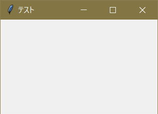

アプリの定義
tkinter をインポートし変数 t に格納
import tkinter as t
また新たな変数にアプリを定義し、実行する
app = t.Tk()
#(実行したいこと)
app.mainloop()
(実行したいこと) に自分が実装したい機能や、その他必要な情報を書き込む
タイトルやウィンドウサイズなど
タイトルの設定
app.title( ' タイトル ' )
ウィンドウサイズの設定
app.geometry( ' 横 x 縦 ' )
「x」は半角英字のエックス。横、縦はそれぞれ半角数字。
実行例
import tkinter as t
app = t.Tk()
app.title( 'テスト' )
app.geometry( '250x150' )
app.mainloop()
実行結果

ウィンドウサイズを固定する
下記でウィンドウサイズを固定できる。
#縦横それぞれ固定
app.resizable( width = False, height = False ) #または
app.resizable( 0, 0 )
#どちらか一方をTrueにすることで、
app.resizable( width = False, height = True ) #縦だけ固定
app.resizable( width = True, height = False ) #横だけ固定
#が可能